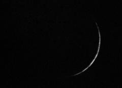
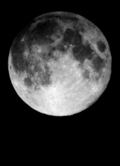
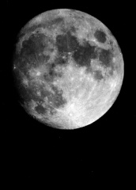

Javascript must be enabled for this page to function properly.
Moon
imaged in a variety of ways
The First Quarter Moon - March 4th 2009 - Canon 350D at prime focus of 200mm newtonian - 1/400s ISO400
20090304 First Quarter Moon
The Full Moon - March 10th 2009 - Canon 350D at prime focus of 200mm newtonian - stack of 3 - 1/1000s - ISO200
20090310 The Full Moon
Crescent Moon - March 29th 2009 - Canon 350D at prime focus of 200mm newtonian - stack of 5 - 1/250s ISO400
20090329 Crescent Moon
Clavius - 20 frames using toucam and X2 barlow on 200mm Newtonian - 20080317
20080317
Gibbous Moon - Februay 2006 - Canon 350D at prime focus of 200mm newtonian - 1/800s ISO100
200602092126

One-day-old Moon - January 1995 - camera held to eyepiece of 60mm refractor - ~1/4s TMAX400 - Published in Astronomy Now!!
199501021018

Full Moon - Summer 1993 - camera held to eyepiece of 60mm refractor - ~1/30s HP5400
199306000402

Gibbous Moon - Summer 1993 - camera held to eyepiece of 60mm refractor - ~1/8s HP5400
199306020322
Up


{kind=link}
{kind=link}
{kind=link}
{kind=link}
imaged in a variety of ways